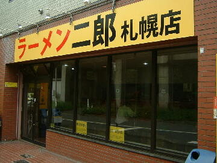
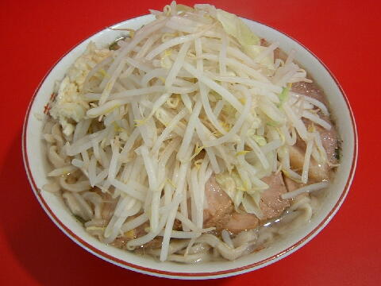
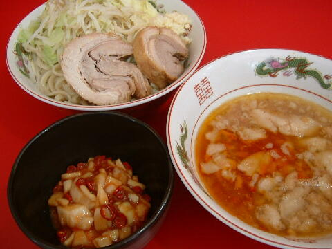

札幌市 北区 北六条西 8-8-11
日・祝（不定休）
11：00〜14：00 17：00〜21：00
土 11：00〜15：00

小 700円、小豚 850円
大 850円、大豚 1000円
普通（一般的なラーメンの量、豚は一枚、ニンニクを入れるか入れないかのみ） 650円
つけ麺 ＋150円、TARO ＋100円
ねぎ生姜 50円、生卵 50円、タマチ 50円、紅葉卸し 50円（現金）、カレースパイス 50円（現金）
店員は、日高町出身の店主と助手。
コショウ、トウガラシ、醤油ダレ。
レンゲ無。ティッシュ有。名刺無。
BGMは、BOSS製オーディオからの洋楽。
トッピングは、二郎基準。
メルマガは「a0001676466@mobile.mag2.com」で用意されている。
「ラーメン二郎 札幌」でヤフー検索
「ラーメン二郎 札幌」でヤフーリアルタイム検索
「ラーメン二郎 札幌」でグーグル検索

小豚 ニンニク
麺は、平打ち極太の直系二郎の麺でプリプリ、ツルツルした食感しょ。
ぶたは、わやくちゃでっかくて、なまち厚いしっかりした歯ごたえの豚っしょ。
スープは、見た目は乳化しているがどってんこく程ではなく、後味さっぱりでいいんでないかい。
ヤサイは、モヤシ8：カイベツ2でごそっと盛られる。
ニンニクは、大切りに刻まれた生ニンニクがのっこり。
はっちゃきこいてまくらないとこっぱんずがすべや。

小＋つけ麺 ニンニク タマチ
トッピングはニンニクの有無のみ。店ではデフォルメを推奨している。
つけダレの丼には、トウガラシの辛味が効いたピリ辛辣油テイスト。
食券確認時に告げるとノーマルスープにもしてくれる。
麺の丼には、ご覧の具材。麺はラーメンより多目に設定されている。
つけ麺は平日昼限定。
タマチは酢漬けされたタマネギの唐辛子和え。名称は本店の最寄駅の田町に由来したものか？
ＰＣ店